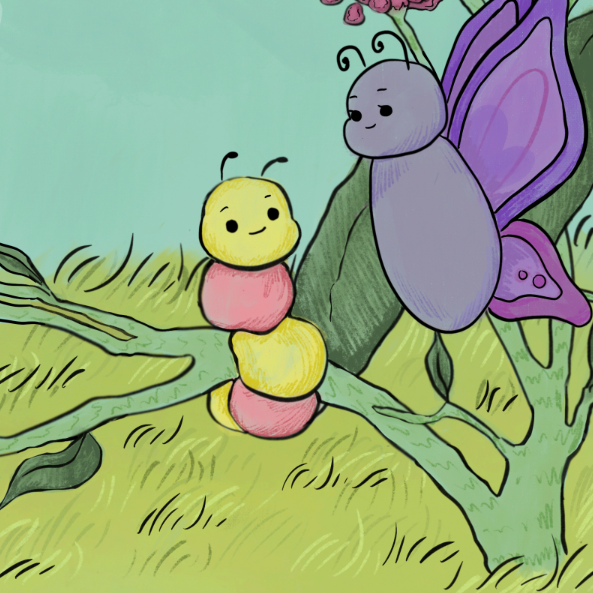

Clover the Caterpillar's Journey
A Story About Neurodiversity · Illustrated by Camila Gonzalez

A Newly Diagnosed Caterpillar Finds Her Wings
When Clover the Caterpillar is told by Dr. Moth that she's neurodivergent, she doesn't know what that means — or whether it's something to be afraid of. Her friend Miss Bloom takes her on an adventure through their community, where she meets butterflies with autism, ADHD, Tourette's, dyslexia, OCD, and more. By the end, Clover grows her wings, and learns to love her brain exactly as it is.
Designed for read-alouds or individual reading, and paired with classroom lesson plans and a DIY sensory space guide.
Clover's Story Begins…
"We found out something special about you," Dr. Moth told Clover. "You're neurodivergent."
Neurodivergent? Clover thought. What is that?
Clover leaves the doctor's office scared and confused — until her friend Miss Bloom offers to take her on a neurodiversity adventure. Together they visit a bakery, an art studio, a library, a school stage, and finally a wildflower sensory garden, meeting a rich community of neurodivergent butterflies along the way.
By the last page, Clover's wings burst open — bright, colorful, and entirely her own.

Watch Clover Come to Life
A look at the art and story behind Clover the Caterpillar's Journey.
The Road Ahead for Our Book
We'll work on creating adapted versions for Pre-K through Grade 5, each pitched to age-appropriate reading levels. Future versions will also spotlight different forms of neurodivergence that are not covered in the pilot
An attached teacher's guide makes Clover a ready-made classroom activity. We already have lesson plans, so incorporating our published book will be our next step.
We also hope to build online read-aloud version so kids at home or school can enjoy Clover's story anytime, anywhere.
We're working toward formal publication to bring Clover to every classroom and library shelf.